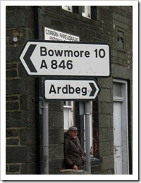

Every whisky lover gets, at some point, to experience whisky from the island of Islay in Scotland. This experience will be remembered throughout his life: it can be either love at first taste, or loathing for eternity. Not everybody can handle the intensity and the powerful peaty flavor of (most) Islay whiskies, some may even stop drinking whisky altogether. Others, like myself, fall in love with the flavor and rarely able to drink anything else.
The magic that is Islay begins to show its beauty even on the way to the island. Either by a flight from Glasgow to the small airport located on the road between Port Ellen and Bowmore, surrounded by peat fields. Or by a two hour ferry ride from the mainland to one of the two ports on Islay: Port Ellen, home to the three most famous distilleries Laphroaig, Lagavulin and Ardbeg. Or Port Askaig, on the other side of the island, home of Caol Ila and Bunnahabhain.
It doesn't matter which way we will choose to get to Islay, one thing is certain: the island is like another world, different and unfamiliar; cold and wet, and at the same time warm and embracing, with strangers who make you feel like we've known them all our lives. Time and weather also work differently on Islay: while one side enjoys the warm sun, rain and wind sweep the other side of the island. In a clear day you can see Northern Ireland from the Laphroaig bay, and when it rains you can almost touch the dark clouds.
The time is 08:40. The morning couldn't have started better than this. The weather app on my phone says that 15°C is expected, with not a cloud in the sky.
Just a day prior my girlfriend and I arrived at the Edinburgh airport, picked up a rental car (with automatic transmission, a bit more expensive than manual, but worth it for driving on the wrong side of the road).
After a few rounds in the huge rental car parking lot we began driving to our first destination, a small town called Tarbert, where we would spend a night before the ferry ride the next morning. Tip: make sure you take a GPS with you (or have one in your rental car), not only will it show you the way, but it's also a helpful reminder that you should turn left at roundabouts.
The West Loch Hotel couldn't be more perfectly located: less than 10 minutes away from Kennacraig Terminal, from which the Caledonian MacBrayne (or CalMac for short) ferry would take us to Port Ellen. The ferry hadn't arrived yet, so I used this opportunity to take a few photos of the breathtaking view.

Other cars started to arrive at the terminal, and after a short while the ferry arrived, and like the belly of the beast, opened its mouth and let out cars (and several trucks). After that we drove in, parked and went upstairs to the lounge.
 The sea was very calm, and we could sit in the cafeteria and drink a cup of coffee at a price that wouldn't shame a major airport. There was also a shop with a nice selection of Islay single malts, and a local blend called Black Bottle, which I later discovered is produced by Bunnahabhain. Bunnahabhain, by the way, was the "malt of the month" on board the CalMac. Around me people were not concerned with the early hour, and were slowly sipping the very gentle malt with just a hint of peat (Bunnahabhain make one of the least peatiest whiskies on Islay). I joined the lucky people, and armed with a glass of liquid gold I went up to the deck to enjoy the fresh air and a divine view.
The sea was very calm, and we could sit in the cafeteria and drink a cup of coffee at a price that wouldn't shame a major airport. There was also a shop with a nice selection of Islay single malts, and a local blend called Black Bottle, which I later discovered is produced by Bunnahabhain. Bunnahabhain, by the way, was the "malt of the month" on board the CalMac. Around me people were not concerned with the early hour, and were slowly sipping the very gentle malt with just a hint of peat (Bunnahabhain make one of the least peatiest whiskies on Islay). I joined the lucky people, and armed with a glass of liquid gold I went up to the deck to enjoy the fresh air and a divine view.
We arrived at Port Ellen at noon, and from there a short drive to the Oystercatcher B&B, where our wonderful hostess Lynn prepared a room for us. After a short rest we immediately went to our first Islay destination: Laphroaig distillery.
The short drive to Laphroaig from our B&B was quite an experience by itself.
One of the many pleasures on the island is what is known as the Islay Wave. Passing drivers will give a wave cheerfully to each other, either with the entire hand or just by raising the index finger off the steering wheel, and this alone enhances the feeling of home which the island provides.
Alongside the road we get a feel for the area surrounding it. Green fields covered with sheep and cows, roaming freely and eating the grass. On the other side of the road the ocean shows its dominance, and the smell of briny sea fills the air, not letting us forget, not even for a moment where we are.
Oh what wonders this must be doing to our favorite whisky...
Even from the guest parking we could smell the strong malty scent in the air. We walked along the gravel road towards the visitors lounge, just in time to register for the last tour for the day. Until the tour began we could enjoy ourselves in the shop, visit the Laphroaig museum inside, or just relax on the comfortable leather couch at the Friends Lounge. In the museum there was a cupboard filled with flags from many countries (Israel not among them). Friends of Laphroaig can plant their country's flag into their own square foot on the island. There were also empty white flags, so I took a blue pen and drew a makeshift Israeli flag! I will remember to bring my own the next time.
 The tour began on the third floor of the malting house. Laphroaig are one of the few distilleries on Islay that still do their own floor malting (together with Bowmore and Kilchoman), and that is only 15% of all the malted barley used by the distillery. The rest comes from the Port Ellen Malting, which provides malt to all the distilleries on the island. Each distillery specifies the required peatiness in PPM (parts per million). Laphroaig use 40 PPM, Bunnahabhain use 2 PPM, and Bruichladdich use up to 140 PPM for their Octomore expression.
The tour began on the third floor of the malting house. Laphroaig are one of the few distilleries on Islay that still do their own floor malting (together with Bowmore and Kilchoman), and that is only 15% of all the malted barley used by the distillery. The rest comes from the Port Ellen Malting, which provides malt to all the distilleries on the island. Each distillery specifies the required peatiness in PPM (parts per million). Laphroaig use 40 PPM, Bunnahabhain use 2 PPM, and Bruichladdich use up to 140 PPM for their Octomore expression.
The barley is soaked in water and then spread on the floor. It needs to be turned once every few hours to keep the temperature even. This process causes the barley to germinate, which releases the sugars locked inside. Those sugars will be later combined with yeast and turned into alcohol. The germination process is then stopped after a few days by using peat fire. This is the most crucial process in making of the Islay whiskies which gives the malted barley the peaty smoky flavor.
That day the distillery was not in production, so we could not see the barley drying, but we could enter the room, and smell the burned peat in the air.
We continued to the place where the malt becomes beer. The malted barley is then ground in a mill. The ground malt is called grist, and grist is mixed in with warm water in a huge container called mash tun. The water absorbs sugars and flavors from the grist. This sweet water is now called wort, and wort is now placed into other huge containers called wash backs. Yeast is added to the wort, and left in the wash backs for a period of a few days to ferment. This creates a very crude beer that is called wash.
Laphroaig use stainless steel wash backs, as opposed to most Islay distilleries, who use wooden wash backs. It is uncertain if this has any effect on the final flavor of the whisky; many distillery managers disagree on this subject. They claim that the fermentation process takes relatively short time, and this shouldn't have any difference on the flavor. They all agree, however, that stainless steel containers are much easier to clean.
From there, our guide took us to the stills, where the wash is distilled and eventually becomes a spirit. There are seven stills at Laphroaig, three wash stills (also known as low wines stills) which handle the first distillation, and four spirit stills which distill the low wines into a fine spirit called new make. The distilled spirit flows through a closed glass case called the spirit safe. The spirit safe is locked with a large padlock, because at this stage of the process the alcohol hasn't been taxed yet. Our guide told us that a long time ago only the customs agents (who loved to make unannounced, unwelcome visits) had the key, but now the key is with the distillery managers.
 Since the distillery wasn't in production at that time, we didn't get to see the process of filling the casks. Instead we all went back to the visitors lounge, where there was waiting for us sheet of paper with five miniature tasting glasses on it, four filled with different Laphroaig expressions, and one filled with water. There was also a plastic pen with a Laphroaig logo which we got to keep as a souvenir. We had a guided tasting of the Laphroaigs, after which each person got a certificate that they visited the distillery and claimed their annual rent, which is a miniature bottle of Laphroaig.
Since the distillery wasn't in production at that time, we didn't get to see the process of filling the casks. Instead we all went back to the visitors lounge, where there was waiting for us sheet of paper with five miniature tasting glasses on it, four filled with different Laphroaig expressions, and one filled with water. There was also a plastic pen with a Laphroaig logo which we got to keep as a souvenir. We had a guided tasting of the Laphroaigs, after which each person got a certificate that they visited the distillery and claimed their annual rent, which is a miniature bottle of Laphroaig.
After we were done tasting and relaxing in the lounge, we decided to go look for my own piece of Islay. To help us, there were Wellington boots in the lounge, and a handy map of the plot. I grabbed the flag I made earlier, and we went hunting. Armed with the flag and the warm fleece I bought at the shop, we went back to the road, where the Friends of Laphroag land is located. The ground was a little bit muddy there, and that's where the boots helped!
After that we came back to the visitors center to have one last look (for the day) at the beautiful hollow by the broad bay, take a few pictures.
The other distilleries were closed by now, so we began slowly driving towards the Kildalton Cross, stopping at Lagavulin and Ardbeg to snap a few photos and write down the tour hours. We had to drive slow: there were deer on the road, and on Islay deer have the right of way! We arrived at the remains of the Kildalton Church and Cross, enjoying the beautiful scenery. We met with some of the folks that were with us at the distillery there. It was so quiet and relaxing there, I felt like I never wanted to leave. Unfortunately, we also were quite hungry by now, so we decided to drive back to our B&B.
 On the way back we got stuck in an Islay traffic jam: sheep. We slowly backed up into a driveway up the road, and waited for the cute little guys to pass. We got an Islay wave from the shepherd too!
On the way back we got stuck in an Islay traffic jam: sheep. We slowly backed up into a driveway up the road, and waited for the cute little guys to pass. We got an Islay wave from the shepherd too!
We grabbed a few things from the local Co-operative shop and fixed ourselves something to eat. It was already evening, and there was a strong smell of burning peat and coal in the air: people are probably using it to warm up their houses. At around 20:00 we went into the Ardview Inn: a local pub in Port Ellen, where we met some wonderful, already well intoxicated locals, who proceeded to buy us drinks, and we returned the favor many times. The whisky selection was unbelievable: they had so many Islay malts that I didn't know where to start. I settled on Ardbeg Airigh Nam Beist, and went to sit by the fireplace at the pub to enjoy my drink.
On to Part 2!